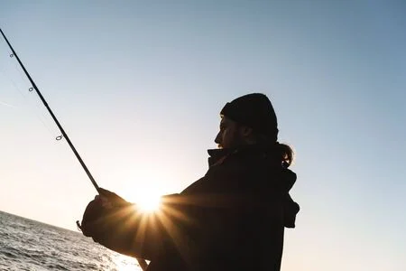
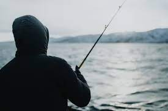
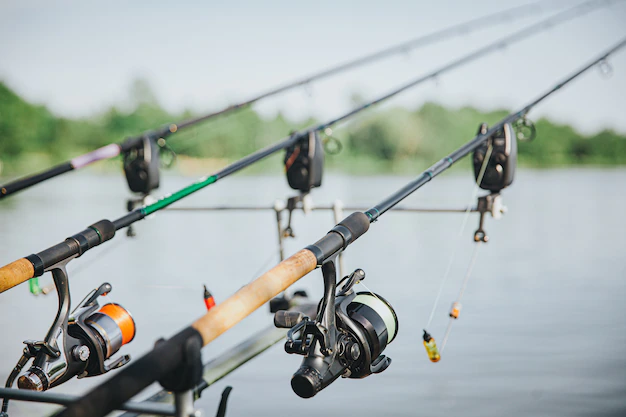
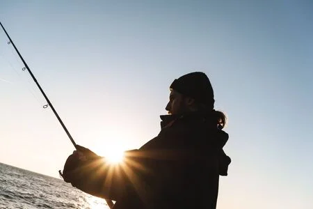
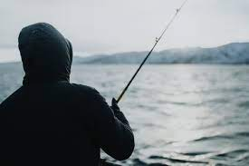
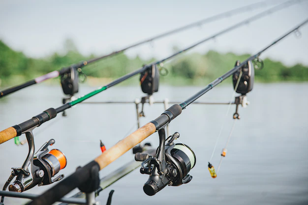
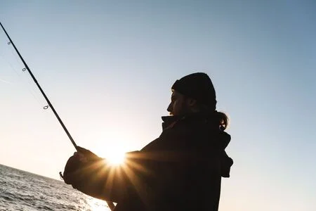
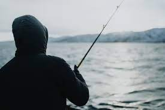
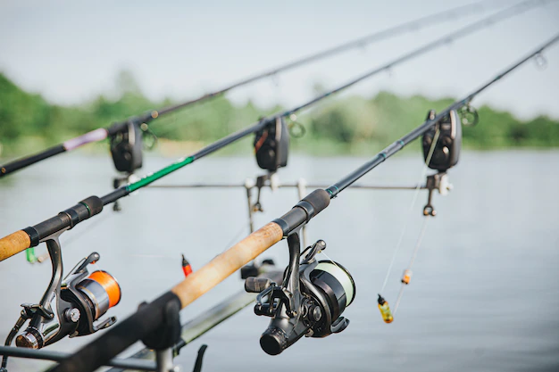
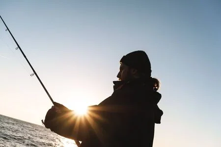
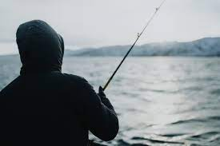
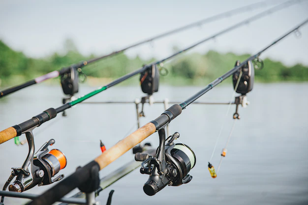
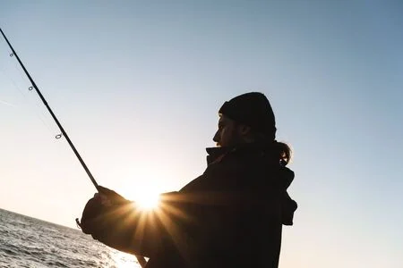
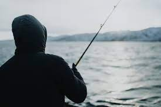
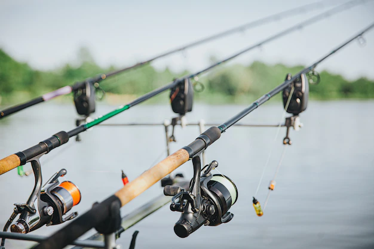
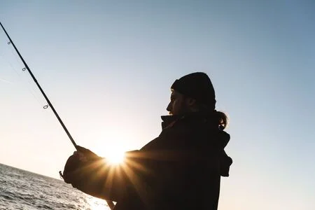
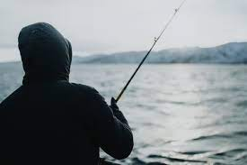
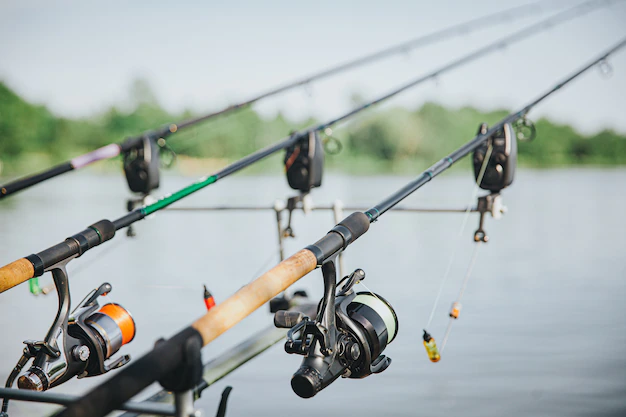
La pesca en Uruguay es una actividad muy popular entre los amantes de la naturaleza y los deportes al aire libre. Con una amplia variedad de especies y lugares para pescar, Uruguay ofrece una experiencia única para los pescadores de todos los niveles. Sin embargo, para asegurar el éxito en la pesca, es importante contar con el equipo adecuado. En este artículo, le mostraremos los productos más importantes que debería tener en cuenta al comprar para pescar en Uruguay. En primer lugar, es esencial contar con una buena caña de pesca. En Uruguay, las especies más comunes para pescar son el dorado, el surubí, el pacú y el boga. Para pescar estas especies, se recomienda una caña de pesca de potencia media y acción rápida, hecha de grafito o fibra de vidrio. En segundo lugar, un carrete de pesca de calidad es esencial para tener éxito en la pesca. Los carretes de pesca de carrete fijo son ideales para pescar en Uruguay, ya que ofrecen una gran capacidad de línea y un sistema de arrastre suave. Se recomienda un carrete con freno delantero o trasero para un mejor control del pez y una mayor precisión en el lanzamiento. Además de una caña y un carrete, es importante contar con una variedad de señuelos y cebos para atraer a las diferentes especies. Señuelos artificiales como las moscas, el jigs, los poppers y los señuelos de superficie son ideales para pescar dorado, surubí y pacú. También es recomendable llevar cebos naturales como el camarón, la lombriz y el verme. Otro producto importante para la pesca en Uruguay es el equipo de pesca adicional, como un medidor de profundidad, un termómetro de agua, una red de aterrizaje y una caja de utensilios de pesca. Estos productos son esenciales para asegurar una experiencia de pesca segura y eficiente. Por último, pero no menos importante, es esencial contar con ropa y calzado adecuado para la pesca. Es recomendable usar ropa y calzado impermeable para protegerse de las condiciones climáticas, y también se recomienda usar un sombrero y gafas de sol para protegerse del sol. En resumen, la pesca en Uruguay es una actividad emocionante y desafiante que ofrece una gran variedad de especies y lugares para pescar. Sin embargo, para tener éxito en la pesca, es esencial contar con el equipo adecuado. Una buena caña y carrete de pesca, señuelos y cebos variados, equipo adicional y ropa y calzado apropiado son fundamentales para asegurar una experiencia de pesca exitosa. Además, es importante investigar y leer opiniones de otros pescadores antes de comprar el equipo. Con la información correcta y el equipo adecuado, los pescadores pueden disfrutar de una experiencia inolvidable en las aguas de Uruguay y capturar una gran variedad de especies. En resumen, al planear una aventura de pesca en Uruguay es esencial contar con una buena caña y carrete, señuelos y cebos variados, equipo adicional y ropa y calzado apropiado. Con estos productos, los pescadores estarán preparados para enfrentar cualquier desafío y tener éxito en la captura de los peces. No pierda la oportunidad de atrapar el pez del siglo con nuestros equipos de pesca de alta calidad! ¡Visítenos hoy para ver nuestra amplia selección de cañas, reeles, señuelos y más